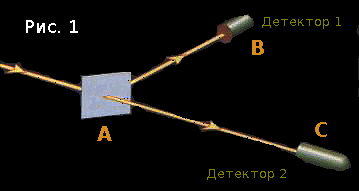
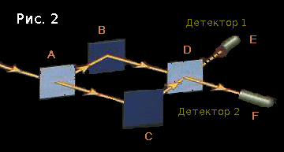
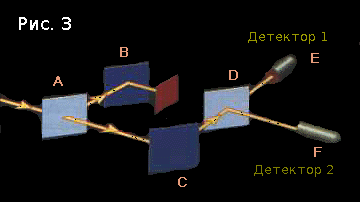

Квантовая механика для всех, даром, и пусть никто не уйдёт обиженным: часть первая
Здравствуйте! Я хотел бы представить вашему вниманию отличное введение в квантовую механику, написанное Элиезером Юдковским; быть может, он известен вам по своему сайту lesswrong.com, посвящённому рационализму, предрассудкам, когнитивным парадоксам и ещё многим интересным вещам.
Введение во введение
Предупреждаю сразу: этот цикл статей заметно отличается от традиционного введения в квантовую механику.
Во-первых, я не буду цитировать Ричарда Фейнмана, однажды заявившего, что «это нормально — не понимать квантовую механику, потому что никто её не понимает». Когда-то это было так, но времена меняются.
Я не скажу: «Квантовую механику невозможно понять, к ней просто нужно привыкнуть». (Эту цитату приписывают Джону фон Нейману; он жил в те дремучие времена, когда никто и в самом деле не понимал квантовую механику.)
Нельзя заканчивать объяснение словами «Если что-то непонятно, так и должно быть». Нет, так не должно быть. Может, проблема в вас. Может — в вашем учителе. В любом случае, её надо решать, а не сидеть сложа руки и успокаивать себя тем, что все остальные тоже ничего не понимают.
Я не буду говорить, что квантовая механика — это нечто странное, запутанное или недоступное для человеческого понимания. Да, она контринтуитивна — но это беда исключительно нашей интуиции. Квантовая механика возникла задолго до Солнца, планеты Земля или человеческой цивилизации. Она не собирается меняться ради вас. Вообще, не существует обескураживающих фактов, есть только теории, обескураженные фактами; а если теория не совпадает с практикой, это не делает ей чести.
Всегда стоит рассматривать реальность как совершенно обыденную вещь. С начала времён во Вселенной не случилось ничего необычного.
Наша цель — научиться чувствовать себя как дома в этом квантовом мире. Потому что мы и так дома.
На протяжении всего этого цикла я буду говорить о квантовой механике как о самой обычной теории; а там, где интуитивное представление о мире не совпадает с ней, я буду высмеивать интуицию за несоответствие реальности.
Во-вторых, я не собираюсь следовать традиционному порядку изучения квантовой механики, копирующему порядок, в котором её открывали.
Обычно всё начинается с рассказа о том, что материя иногда ведёт себя как кучка маленьких бильярдных шаров, сталкивающихся между собой, а иногда — как волны на поверхности бассейна. Это сопровождается несколькими примерами, иллюстирующими оба взгляда на материю.
Раньше, когда всё это только зарождалось и никто не имел ни малейшего понятия о математических основах физики, учёные всерьёз считали, что всё состоит из атомов, ведущих себя примерно как бильярдные шары. А потом они стали считать, что всё состоит из волн. А потом они опять вернулись к бильярдным шарам. Всё это привело к тому, что учёные окончательно запутались, и только через несколько десятилетий — к концу девятнадцатого века — им удалось расставить всё по своим местам.
Если применить этот исторический достоверный подход к обучению современных студентов (как сейчас и поступают), с ними закономерно случится то же, что случилось с ранними учёными, а именно — они впадут в полное и абсолютное замешательство. Рассказывать студентам, изучающим физику, о корпускулярно-волновом дуализме, это то же самое, что начинать курс химии лекцией о четырёх стихиях.
Электрон не похож ни на бильярдный шар, ни на гребень океанской волны. Электрон — это совершенно другой объект с математической точки зрения, и он остаётся таким при любых обстоятельствах. А если вы будете упорствовать в своём стремлении считать его и тем, и тем, как вам удобнее, предупреждаю: за двумя зайцами погонишься — ни одного не поймаешь.
Это не единственная причина, по которой исторический порядок — не лучший выбор. Давайте проследим за гипотетическим процессом с самого начала: люди замечают, что они окружены другими животными — внутри животных, оказывается, есть органы — а органы, если присмотреться внимательнее, состоят из тканей — под микроскопом видно, что ткани состоят из клеток — клетки состоят из протеинов и прочих химических соединений — химические соединения состоят из атомов — атомы состоят из протонов, нейтронов и электронов — а последние гораздо проще и понятнее животных, с которых всё началось, но были открыты на десятки тысяч лет позже.
Физику не начинают проходить с биологии. Тогда почему её нужно начинать с обсуждения лабораторных экспериментов и их результатов, которые даже в случае простейших опытов являются следствием множества сложных и запутанных процессов?
С одной стороны, я могу понять, почему во главу угла ставится эксперимент. Мы же о физике говорим, в конце концов.
С другой стороны, давать студентам в руки сложный математический аппарат только для того, чтобы они могли проанализировать простой опыт — это уже чересчур. Программистов, например, сначала учат складывать две переменные, а только потом — писать многопоточные приложения; и плевать на то, что вторые «ближе к реальной жизни».
Классическая механика не следует явным образом из квантовой механики. Более того, классическая механика находится на гораздо более высоком уровне. Сравните атомы и молекулы с кварками: миллионы известных науке химических веществ, сотня химических элементов, и всего шесть кварков. Сначала лучше понять простое, а только потом переходить к сложному.
Наконец, я буду рассматривать квантовую механику со строго реалистической позиции — наш мир является квантовым, наши уравнения описывают территорию, а не её карту, и привычный нам мир неявным образом существует в квантовом мире. Если среди моих читателей есть антиреалисты — пожалуйста, придержите свои комментарии. Квантовую механику гораздо труднее понять и представить, если сомневаешься в её справедливости. Я поговорю об этом подробнее в одной из следующих статей.
Я думаю, что той точки зрения, которую я буду излагать в этом введении, придерживается большинство физиков-теоретиков. Но вы всё же должны знать, что это не единственная возможная точка зрения, и немалая доля учёных сомневается в верности реалистической позиции. Хоть я и не собираюсь уделять внимание каким-либо другим теориям прямо сейчас, я чувствую себя обязанным упомянуть о том, что они есть.
Подводя итог, моя цель — научить вас думать как коренной житель квантового мира, а не как турист поневоле.
Покрепче вцепитесь в реальность. Мы начинаем.
Конфигурации и амплитуды
Посмотрите на рис. 1. В точке A находится полупосеребрённое зеркало, а в точках B и C — два детектора фотонов.

Этот простой эксперимент в своё время заставил учёных поломать головы. Дело в том, что в половине случаев фотон, выпущенный в сторону зеркала, регистрировался первым детектором, а в половине — на вторым. И учёные — внимание, приготовьтесь смеяться — предполагали, что зеркало то пропускало фотон, то отражало его.
Ха-ха-ха, представьте себе зеркало, которое может само выбирать, пропускать ему фотон или не пропускать! Если вы и можете это представить, то все равно не делайте этого — а не то вы запутаетесь так же, как и те учёные. Зеркало ведёт себя абсолютно одинаково в обоих случаях.
Если бы мы попробовали написать компьютерную программу, симулирующую этот эксперимент (а не просто предсказывающую результат), она бы выглядела примерно так…
В начале программы мы объявляем переменную, хранящую в себе определённый математический объект — конфигурацию. Она представляет некое описание состояния мира — в данном случае, «один фотон летит в точку А».
На самом деле конфигурация описывается комплексным числом (напомню, что комплексные числа имеют вид (a + bi), где a и b — действительные числа, а i — мнимая единица, т.е. такое число, что i² = -1). Нашей конфигурации «фотон летит в точку A» тоже соответствует какое-то число. Пусть это будет (-1 + 0i). В дальнейшем мы будем называть число, соответствующее конфигурации, её амплитудой.
Введём ещё две конфигурации: «фотон летит из A в точку B» и «фотон летит из A в точку C». Мы пока не знаем амплитуды этих конфигураций; им будут присвоены значения в ходе выполнения программы.
(повторим рисунок 1)
Посчитать амплитуды можно, применив правило, по которому работает зеркало, к начальной конфигурации. Не вдаваясь в подробности, можно считать, что правило выглядит так: «умножить на 1, когда фотон пролетает; умножить на i, когда фотон отражается». Применим правило: амплитуда конфигурации «фотон летит в B» равняется (-1 + 0i) × i = (0 + -i), а амплитуда конфигурации «фотон летит в C» равняется (-1 + 0i) × 1 = (-1 + 0i). Других конфигураций на рис. 1 нету, так что мы закончили.
В принципе, можно считать «первый детектор регистрирует фотон» и «второй детектор регистрирует фотон» отдельными конфигурациями, но это ничего не меняет; их амплитуды будут равны амплитудам двух предыдущих конфигураций соответственно. (На самом деле их ещё надо домножить на множитель, равный расстоянию от A до детекторов, но мы просто предположим, что все расстояния в нашем эксперименте являются множителями единицы.)
Итак, вот конечное состояние программы:
И, возможно:
Разумеется, сколько бы раз мы ни запускали программу, конечное состояние останется таким же.
Теперь, по довольно сложным причинам, в которые я пока не буду вдаваться, не существует простого способа измерить амплитуду конфигурации. Состояние программы скрыто от нас.
Что же делать?
Хоть мы и не можем измерить амплитуду непосредственно, кое-что у нас есть — а именно, волшебная измерительная штуковина, которая может сообщить нам квадрат модуля амплитуды конфигурации. Другими словами, для амплитуды (a + bi) штуковина ответит числом (a² + b²).
Точнее было бы сказать, что волшебная штуковина находит всего лишь отношение квадратов модулей друг к другу. Но даже этой информации оказывается достаточно, чтобы понять, что происходит внутри программы и по каким законам она работает.
С помощью штуковины мы можем легко узнать, что квадраты модулей конфигураций «сработал первый детектор» и «сработал второй детектор» равны. А проведя некоторые более сложные эксперименты, мы сможем также узнать отношение самих амплитуд — i к 1.
Кстати, а что это за волшебная измерительная штуковина такая?
Ну, когда такие эксперименты проводят в реальной жизни, в качестве волшебной штуковины служит то, что эксперимент проводят пару тысяч раз и просто считают, сколько раз фотон оказался в первом детекторе, а сколько — во втором. Отношение этих значений и будет отношением квадратов модулей амплитуд. Почему это будет так — вопрос другой, гораздо более сложный. А пока можно пользоваться штуковиной и без понимания того, как да почему она работает. Всему своё время.
Вы можете спросить: «А зачем вообще нужна квантовая теория, если её предсказания совпадают с предсказаниями „бильярдной” теории?» Есть две причины. Во-первых, реальность, что бы вы там ни думали, всё-таки подчиняется квантовым законам — амплитуды, комплексные числа и всё такое. А во-вторых, «бильярдная» теория не работает для любого мало-мальски сложного эксперимента. Хотите пример? Пожалуйста.
На рис. 2 вы можете видеть два зеркала в точках B и C, и два полу-зеркала в точках A и D. Позже я объясню, почему отрезок DE проведён пунктиром; на расчётах это никак не скажется.

Давайте применим правила, которые мы уже знаем.
В начале у нас есть конфигурация «фотон летит в A», её амплитуда — (-1 + 0i).
Считаем амплитуды конфигураций «фотон летит из A в B» и «фотон летит из A в C»:
Интуитивно ясно, что обычное зеркало ведёт себя как половина полу-зеркала: всегда отражает фотон, всегда умножает амплитуду на i. Итак:
Важно понять, что «из B в D» и «из C в D» — это две разные конфигурации. Нельзя просто написать «фотон летит в D», потому что от угла, под которым этот фотон приходит в D, зависит то, что с ним случится дальше.
Считаем дальше:
Итого:
Отношение квадратов модулей амплитуд — 0 к 4; из расчётов следует, что первый детектор вообще не будет срабатывать! Поэтому-то отрезок DE и был проведён пунктиром на рис. 2.

Если бы полу-зеркала отражали или пропускали фотон случайным образом, оба детектора реагировали бы примерно с одинаковой частотой. Но это не совпадает с результатами экспериментов. Вот и всё.
Вы могли бы возразить: «А вот и не всё! Предположим, например, что когда зеркало отражает фотон, с ним происходит что-то такое, что второй раз он уже не отразится? И, наоборот, когда зеркало пропускает фотон, в следующий раз ему придётся отразиться.»
Во-первых, бритва Оккама. Не стоит выдумывать сложное объяснение, если уже существует простое (если, конечно, считать квантовую механику простой…) А во-вторых, я могу придумать другой опыт, который опровергнет и эту альтернативную теорию.
Поместим маленький непрозрачный объект между B и D, чтобы амплитуда конфигурации «фотон летит из B в D» всегда равнялась нулю.

Теперь амплитуда конфигурации «фотон летит из D в F» равна (1 + 0i), а амплитуда конфигурации «фотон летит из D в E» — (0 + -i). Квадраты модулей равны 1. Это значит, что в половине случаев будет срабатывать первый детектор, а в половине — второй.
Это невозможно объяснить, если считать, что фотон — это маленький бильярдный шарик, который отражается от зеркал.
Дело в том, что об амплитуде нельзя думать, как о вероятности. В теории вероятностей, если событие X может произойти или не произойти, то вероятность события Z равна P(Z|X)P(X) + P(Z|¬X)P(¬X), где все вероятности положительны. Если вы знаете, что вероятность Z при условии, что X случилось, равна 0.5, а вероятность X — 0.3, то полная вероятность Z по меньшей мере 0.15, независимо от того, что произойдёт, если X не случится. Не бывает отрицательных вероятностей. Возможные и невозможные события не могут аннулировать друг друга. А амплитуды — могут.

Вот пример неправильного мышления: «Фотон летит в B или в C, но он мог полететь по-другому, и это влияет на вероятность того, что он полетит в E…»
События, которые не случились, не имеют никакого влияния на мир. Единственное, что может повлиять на мир — это наше воображение. «О боже, эта машина чуть не сбила меня», думаете вы, и решаете уйти в монастырь, чтобы больше никогда не встречаться с опасными машинами. Но реально по-прежнему не само событие, а лишь ваше воображение, содержащееся в вашем мозгу — который можно из вас достать, пощупать и положить назад, чтобы убедиться, что он вполне реален.
Реально всё, что влияет на мир. (Если вы полагаете, что это не так, попробуйте дать определение слову «реальный».) Конфигурации и амплитуды непосредственно влияют на мир, так что они тоже реальны. Сказать, что конфигурация — это «то, что могло случиться», так же странно, как сказать, что стул — это «то, что могло случиться».
А что это тогда — конфигурация?
Продолжение следует.
На самом деле всё немного сложнее, чем вам могло показаться после прочтения этой статьи.
Каждая конфигурация описывает все частицы во Вселенной. Амплитуда — это непрерывное распределение по всему пространству конфигураций, а не дискретное, как мы рассматривали сегодня. И в самом деле, фотоны же не телепортируются из одного места в другое мгновенно, а каждое различное состояние мира описывается новой конфигурацией. В конце концов мы и до этого доберёмся.
Если вы ничего не поняли из этого абзаца, не беспокойтесь, я всё объясню. Потом.